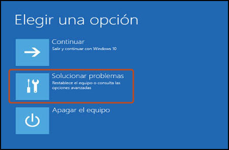
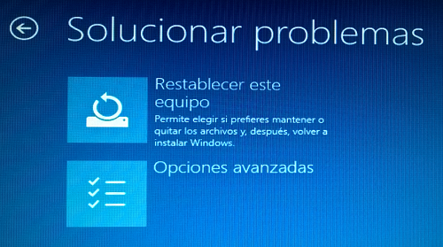

| problemas de actualizacion |
a computadora sufrio un problema con las actualizaciones. posibles soluciones: reseteo de pc desde un punto de restablecimiento se reinicia la computadora y se apreta f10 constantemente hasta que aparezca una pantalla azul que tenga varias opciones tu eliges opcion de solucion de problemas lugo opciones avanzads y luego restaurar sistema   |